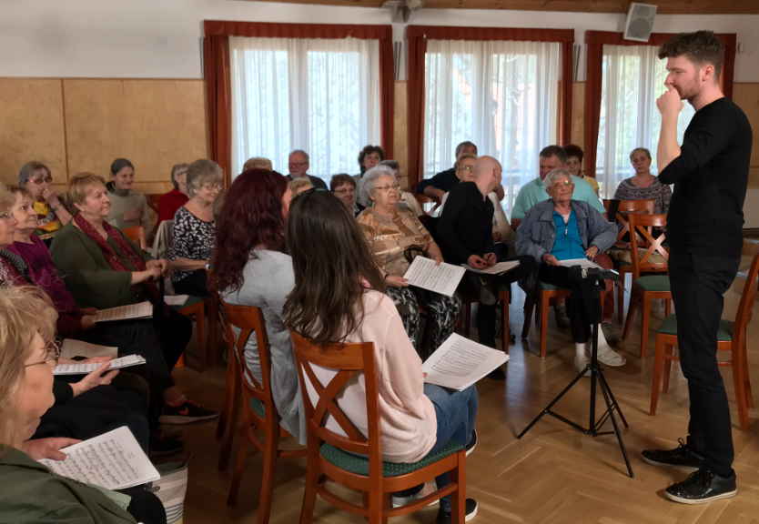
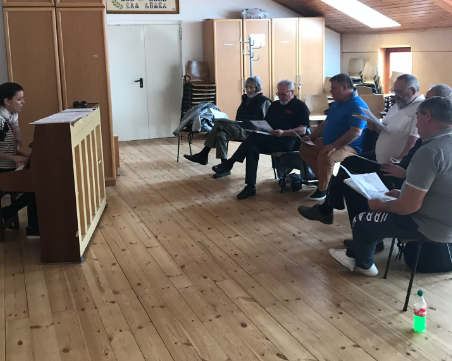
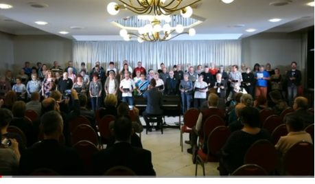

Technic
First day: getting to know each other

in the morning: breathing exercises, vocal warm up, parts

in the afternoon: singing together

2nd-4th days:
in the morning: vocal warm up, gymnastics and movements, breathing technique - yoga

in the afternoon: practicing together

5th day:
in the morning: practicing movement and sound techniques

in the afternoon: main rehearsal

6th day:
performance

The program includes common breakfast and lunch and optional group
activities in the afternoon and after the performance a dinner shared with the audience.